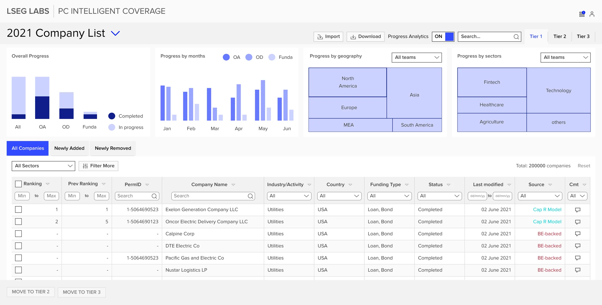
Refinitiv Labs · LSEG · Jul – Dec 2021 · 6 min read
They asked for automatic data collection. What they needed was a shared list and a way to see who was doing what.
Why this case is here: Questioning the brief before building it.
Prototype tested with users.
Six scenes follow, then the full written case. Every number carries a stamp that says how I know it.
- UI Designer, Refinitiv Labs; ran the UX end to end
- Product manager, data scientist, 2 engineers
- Prototype tested with users
- System Usability Scale70 → 89Tested
- Testers who finished every task5 of 5Tested
The problem
They asked for automatic data collection.
About 200,000 private-company records a year, kept in spreadsheets and email, by a team that had missed its deadline for several years running.
- ~200,000
- company records updated a year
- RecordContent team
- 11
- managers and analysts interviewed
- RecordShow, don’t describe
- 24
- people surveyed on where the year went
- Record9 managers, 15 analysts
The reframe
The time didn’t go to collecting. It went to the list, and to each other.
Five managers struggled to coordinate. Four found it hard to track changes to 200,000 companies in one spreadsheet. Some sources would always need a person.
“A huge amount of work.”

The year, as a list
About 200,000 companies a year, in one spreadsheet.
The content team keeps private-company records current for LSEG’s data clients, and had missed its deadline for several years running.
Three teams took their share, and changes went by email.
The OA, OD and Fundamentals teams each worked their own part of every company. Nobody could see what had changed, or who was behind.
One list everyone can see.
A lane per team, new companies flagged as they arrive, every removal with a reason, and progress by team. The cubes are an illustration, not data.
- About 200,000 companies a year, in one spreadsheet. The content team keeps private-company records current for LSEG’s data clients, and had missed its deadline for several years running.
- Three teams took their share, and changes went by email. The OA, OD and Fundamentals teams each worked their own part of every company. Nobody could see what had changed, or who was behind.
- One list everyone can see. A lane per team, new companies flagged as they arrive, every removal with a reason, and progress by team. The cubes are an illustration, not data.
The design
Four moves, all aimed at the list, not the collection.
A dynamic list built from rules. Tabs for what was added and removed since you last looked. A reason on every change, visible to the team. Progress by status for the lead.
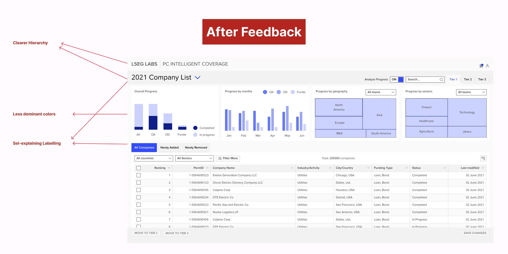
The proof
Every tester finished every task.
Prototype results from a small group. They show the design was usable and wanted, not production impact.
- 70 → 89
- System Usability Scale, target 71–76
- TestedSurvey of 9 users
- 5 of 5
- testers completed every task
- TestedModerated sessions
- 2 min 23 s
- average task time on the prototype
- TestedModerated sessions
- “Saves weeks”
- of the content team’s year
- EstimateTheir estimate, not measured
Leading the work
I asked for the evidence before accepting the brief.
- Set the success bar with the product manager up front, from Labs’ own benchmarks.
- Held scope: when the hi-fi review showed the project growing, we parked a whole user group so the first release could land.
- Worked with data science and engineering from the hypothesis stage, so the MVP stayed buildable.
Read the full case
In one line: LSEG's global content team updates records on about 200,000 private companies a year for the firm's data clients, and kept missing the deadline. They asked for a system that collects the data automatically. Research showed the time went somewhere else, so we built for that instead.
| Role | UI Designer at Refinitiv Labs (LSEG's innovation unit); I ran the UX end to end on this project |
| Team | Product manager, data scientist, two engineers; content managers and analysts as users |
| Platform | Internal web application |
| Result | SUS 70 → 89 · 5 of 5 test users completed every task · average task time 2 min 23 s on the prototype |
Thirty-second version
- Problem. About 200,000 company records a year, kept in spreadsheets, and a team that had been late for several years running. Their request: automate the data collection.
- What I did. Interviewed 6 content managers and 5 analysts and surveyed 24 people on where their year went. Collection wasn't the main drain. Building and tracking the company list, and coordinating with each other, was. We reframed the project around that, cut scope in a prioritisation workshop, and tested three rounds of prototypes.
- Result. SUS rose from 70 to 89 against a target of 71–76 taken from three earlier Labs projects. Every tester completed every task. Content managers said it would save weeks of their year. That is their estimate, and I present it as one.
How the work ran
| Step | What happened |
|---|---|
| Discover | Jul–Aug 2021. Stakeholder interviews with content leadership; 6 managers and 5 analysts asked to show, not describe, how they build the list; survey of 24 people on how the year splits |
| Reframe | From "automate collection" to "manage, track and share a list of 200,000 companies so the team meets its deadline" |
| Quality bar agreed | With the PM, before ideation: SUS 71–76, adoption interest 4.0 / 5 or better, list work from weeks to days |
| Design | Three rounds of prototypes on the Labs design system, from low to high fidelity |
| Validate | Moderated test with 5 content managers; SUS survey with 9 users; adoption question at the end of each session |
| Ship or measure | Prototype handed to engineering in Dec 2021. |
The brief asked for faster horses
Refinitiv sells financial data to tens of thousands of clients. Part of it is profiles of private companies likely to raise capital. A global content team builds and updates those profiles: around 200,000 a year, in spreadsheets and email. The team had missed its deadline for several years, and late data is data a competitor sold first.
In July 2021 the team asked Labs for an automatic data-collection system. A reasonable request, and the kind that can cost a year and still miss if collection isn't where the time goes. So before saying yes, we checked.
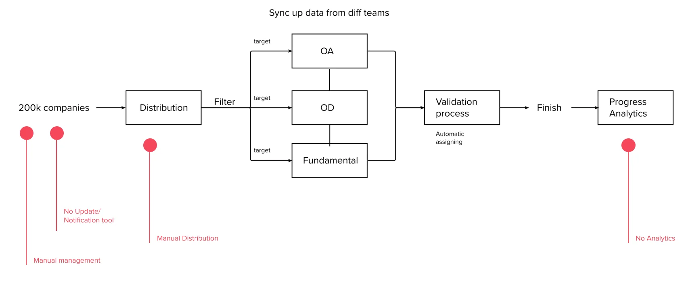
Watching the work showed where the year went
| Study | Who | What we asked |
|---|---|---|
| Stakeholder interviews | Content leadership | What "late" costs, and why they wanted automation |
| User interviews | 6 content managers, 5 content analysts | Show us how you build and update the list, step by step |
| Survey | 9 managers, 15 analysts | How your working year splits across tasks |
| Finding | What it meant |
|---|---|
| 5 managers struggled to coordinate with each other ("a huge amount of work") | Collaboration was a cost nobody had named |
| 4 managers found it hard to create and track changes to 200,000 companies in one spreadsheet | The list itself was the bottleneck |
| 7 people wanted more time for quality checks, "a better use of time" | Freeing time mattered more than collecting faster |
Some sources, like trade magazines, would always need a person. Full automation wasn't possible, and it wasn't what slowed them down.
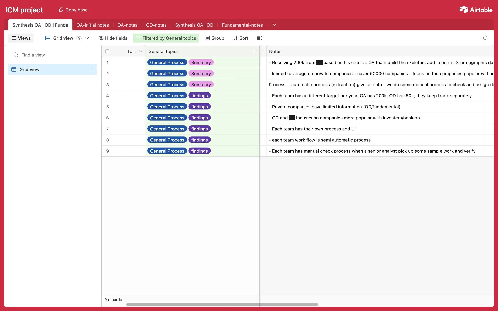
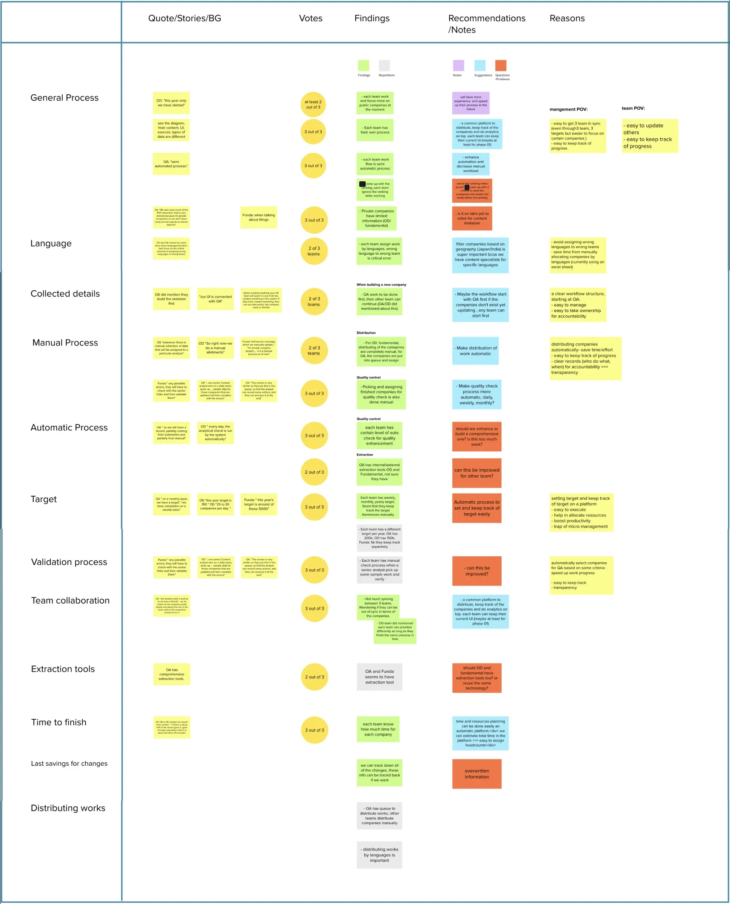
Three teams, three ways of working
Each team owned a different slice of the same companies, and each had its own process, its own target and its own checks.
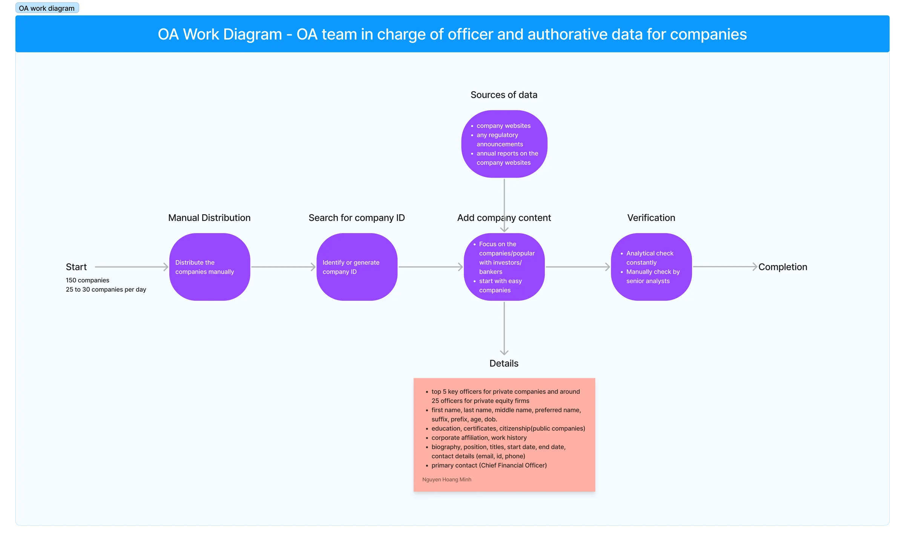
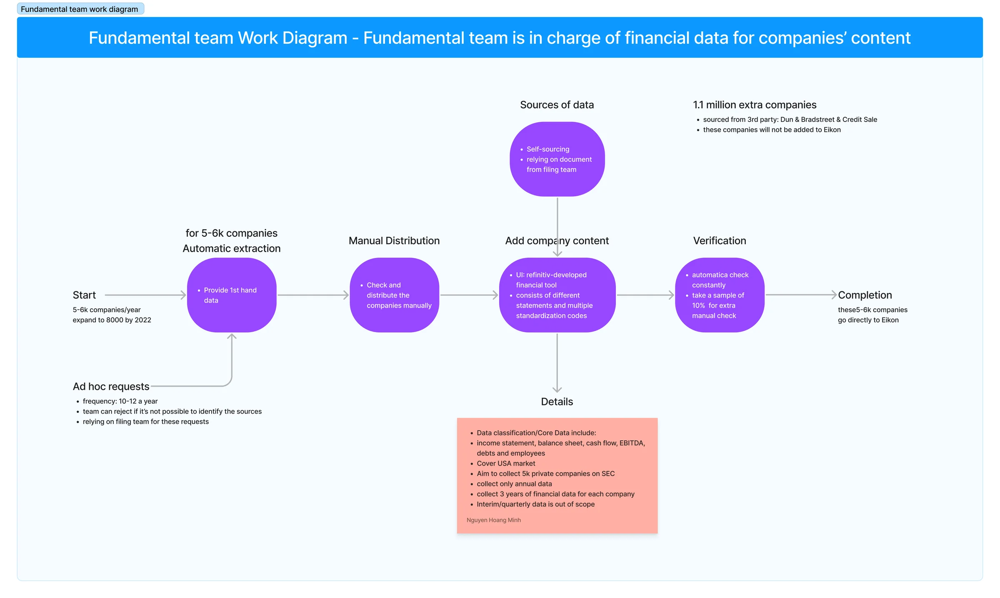
Who we designed for
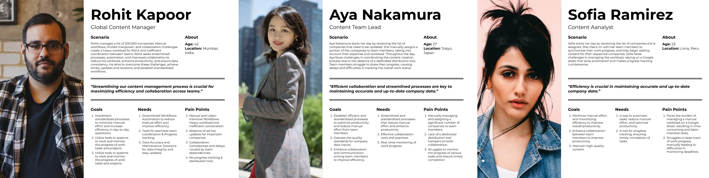
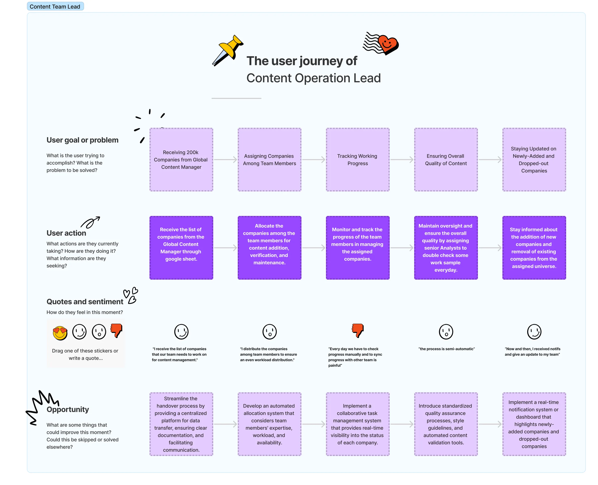
The reframed question: how might we help the content team manage and track 200,000 company records a year, and work together on them, so they meet their deadline?
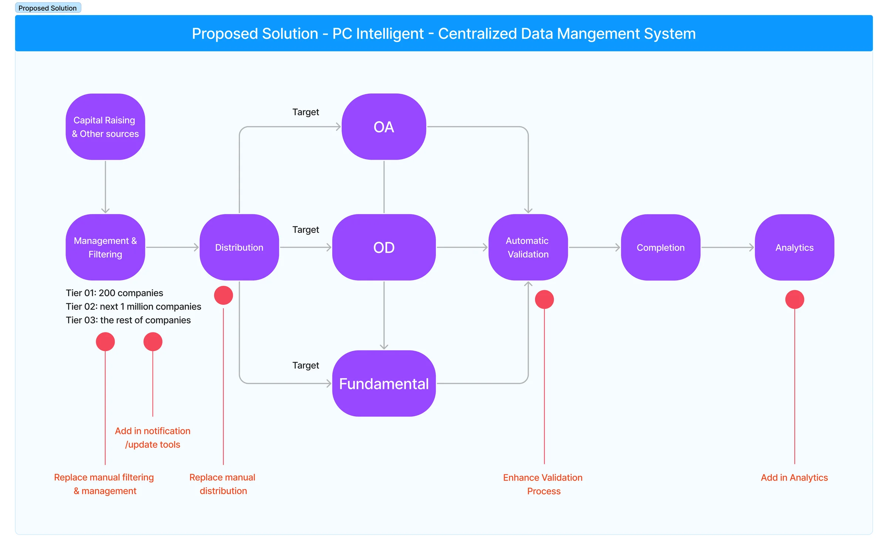
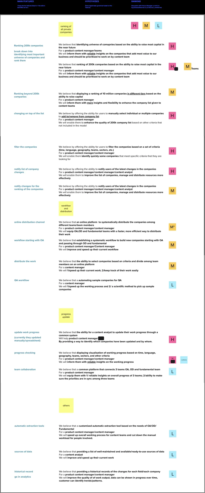
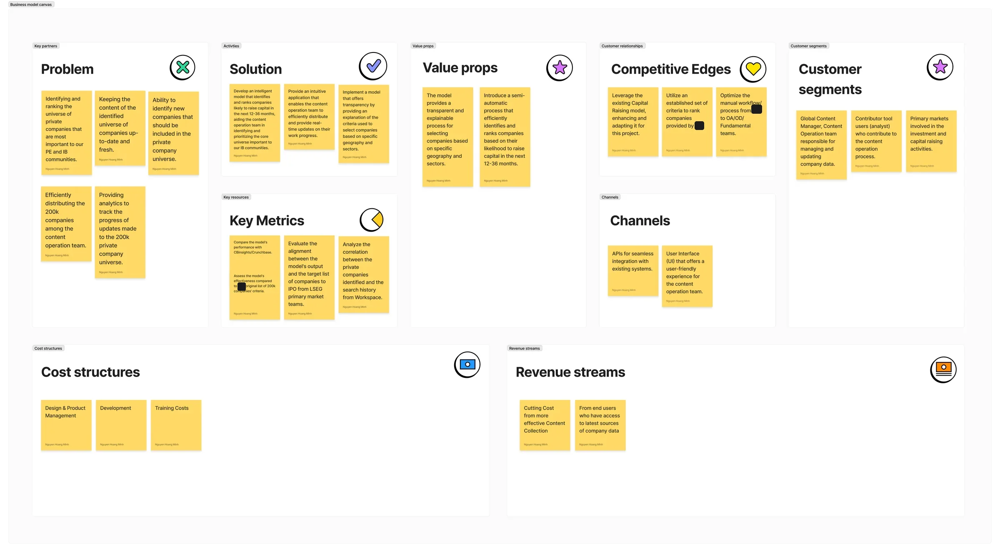
Four moves, all aimed at the list, not the collection
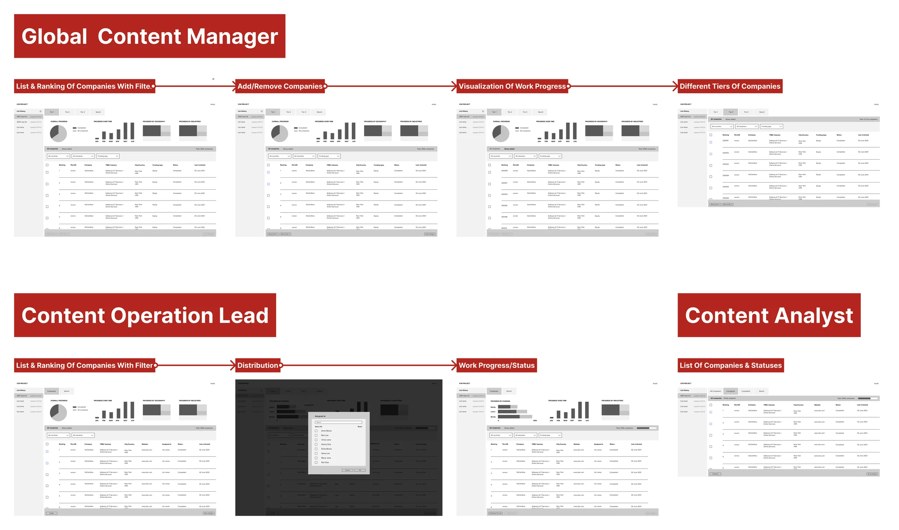
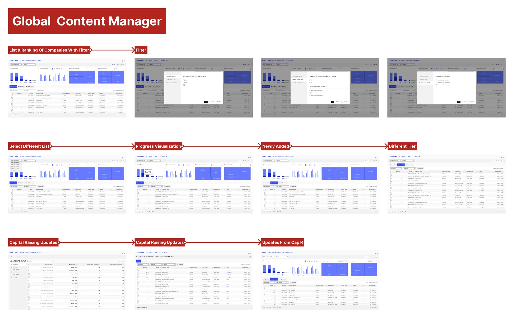
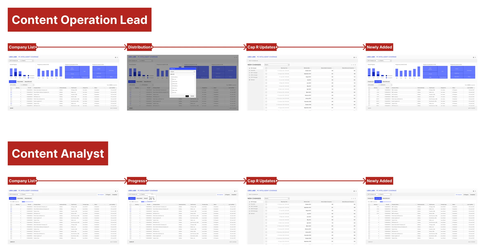
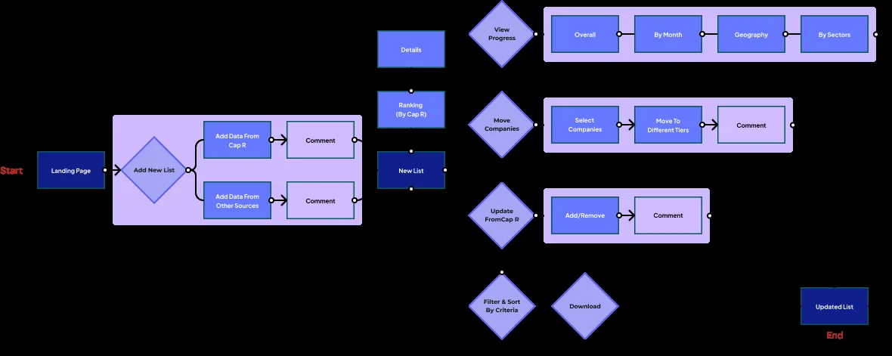
- A dynamic company list built from rules and filters, instead of rows copied between spreadsheets.
- "Newly added" and "newly removed" tabs, so each manager sees what changed since they last looked.
- A reason on every change. Adding, removing or editing a company asks for a short reason, visible to the whole team. 4 of 5 testers had said the earlier prototype wasn't collaborative enough; this was the fix.
- Status and progress charts so the team lead sees who is behind before the deadline, not after.
What testing changed
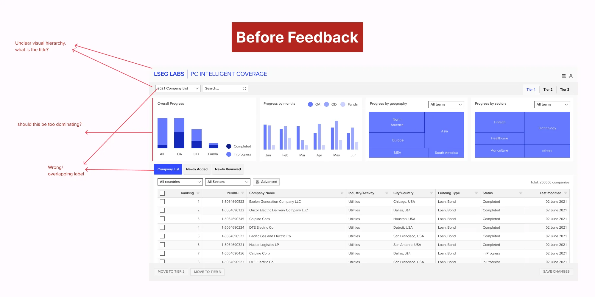
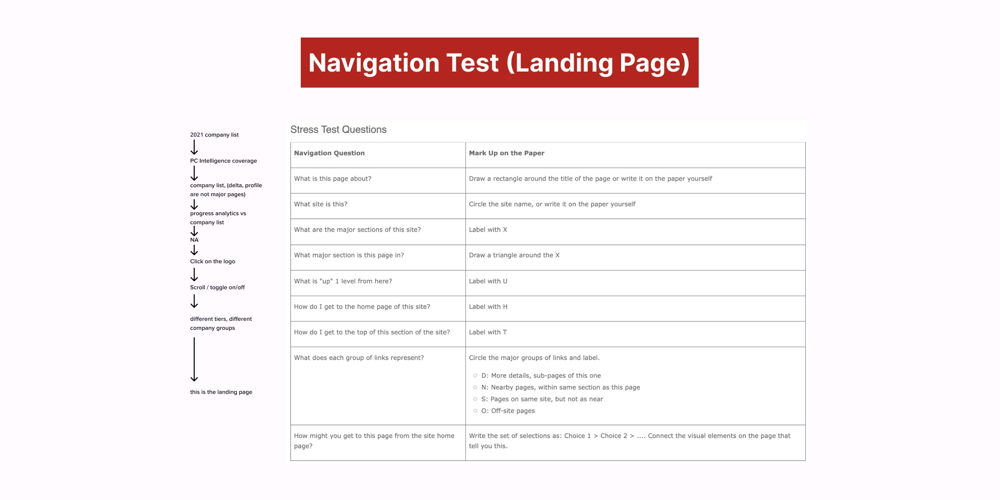
Decision log
| Decision | Options | What we chose and why |
|---|---|---|
| What to build | Automatic data collection (the request) / list management and collaboration | List and collaboration. The time went there, and collection couldn't be fully automated anyway. |
| Who to design for first | Managers and analysts together / managers first | Managers first. The hi-fi review showed scope growing. In a workshop with product and the innovation lead we parked the analyst archetype. |
| Patterns | New components / the Labs design system | Labs design system. Faster to test, and engineers could build it. |
| Collaboration | Chat / structured reasons on each change | Structured reasons. A reason attached to the record lasts; a chat message gets lost. |
Results
| Measure | Before | After | How measured |
|---|---|---|---|
| SUS | 70 | 89 | Survey of 9 users after testing the final prototype |
| Task completion | no baseline | 5 of 5 | Moderated test, 5 content managers |
| Average task time | no baseline | 2 min 23 s | On the prototype |
| Annual workload | weeks | "saves weeks" | Content managers' own estimate, not measured |
Read these carefully. Prototype results from a small group. They show the design was usable and wanted, not production impact.
How I led
- Questioned the brief before accepting it. The team asked for a solution; I asked for the evidence first.
- Set the success bar with the PM up front, using Labs' own benchmarks.
- Held scope. When the hi-fi review showed the project growing, I ran a prioritisation workshop with product and the innovation lead, and we parked a whole user group so the first release could land.
- Worked with data science and engineering from the hypothesis stage, so the MVP stayed buildable.
What I'd do differently
I'd have asked the content team to show their process in the first stakeholder meeting, not in a later interview round. The "faster horses" request took a month to unpick because we started from the solution they asked for. Now I ask "show me the last time you did this" before "what do you need".
Research numbers, decisions and test results are from the project; workload savings are users' estimates.